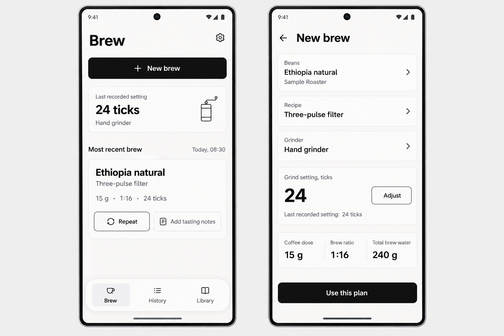
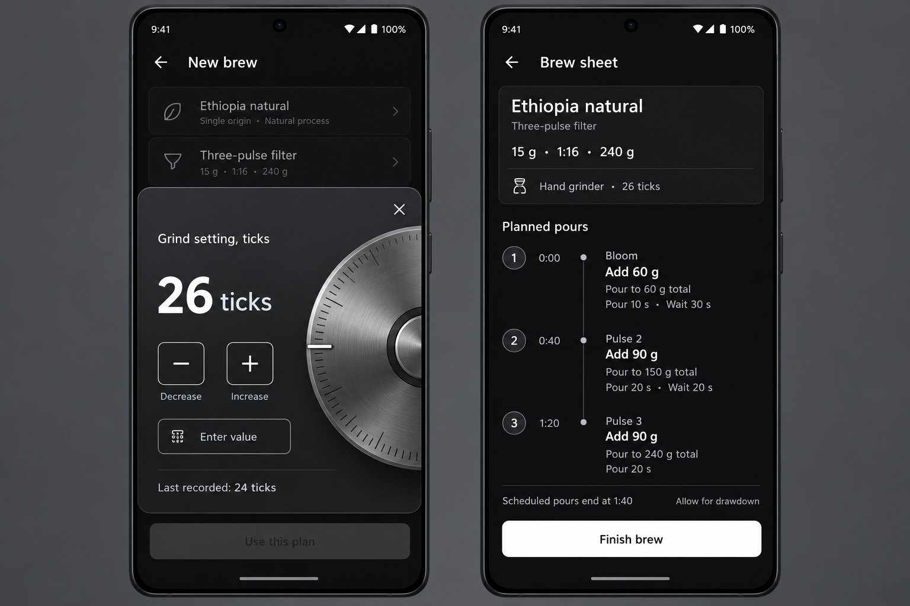
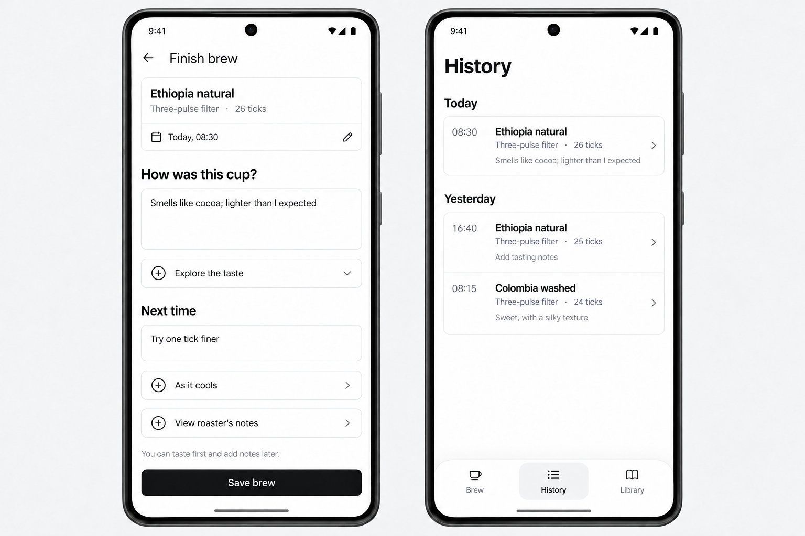

Brew and setup
Light appearance with remembered choices and a concise plan summary.

Grinder dial and brew sheet
Dark appearance, a brushed-metal dial proposal, and static planned pours.

Tasting notes and History
Optional notes up front and completed brews ordered newest first.
